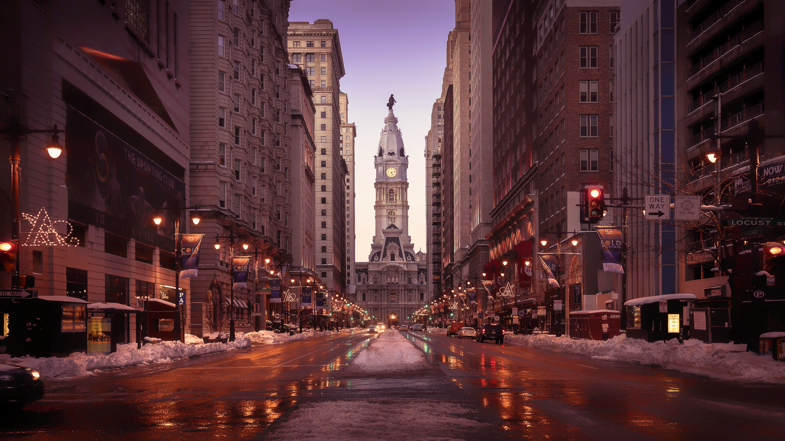

About

WaterFront
Waterfront Gourmet cafes are Center City Philadelphia’s favorite spots for inspired twists on deli-style sandwiches, delicious signature salads, gourmet paninis, and distinctive coffee by bali espresso™. We began our journey with our first cafe in 2014, and we now have 4 locations in the downtown Philadelphia area, including our latest spot at Dilworth Plaza (across from City Hall). Our food is always freshly prepared, and we keep our menu fresh too, by making sure it’s constantly evolving. We offer distinctive catering services for corporate and private events throughout Center City Philadelphia.
Owner
Hanna Kogan
I was born and raised in Bali, Indonesia, where I studied food and hospitality. In 2001 I immigrated to the U.S. to immerse myself in the diverse food culture, and to pursue my dream. I’ve worked in the food industry to hone my craft ever since. Waterfront Gourmet is a passion of mine and a dream that became reality in early 2014. My vision for Waterfront Gourmet is to maintain an atmosphere of comfort – merging the elements of a cozy cafe, with top-quality deli cuisine. I strive to make sure that every sandwich I make takes something familiar and presents it to you in a new and exciting way. The combination of my technique and passion stirs together to create deli favorites that are a delicate blend of old and new. My menu will never be finished. Instead it’s always evolving and changing as I hone and perfect my craft.
I hope you’ll come down, and have a bite with me.